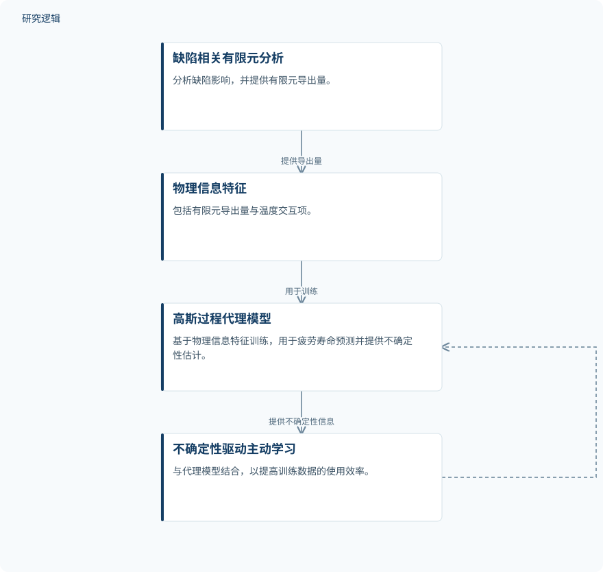

摘要解读
主动学习与缺陷感知有限元驱动的激光粉末床熔融Hastelloy-X疲劳寿命代理建模
Active learning-driven surrogate modeling for fatigue life prediction of LPBF hastelloy-X using defect-informed finite element analysis
解读更新 2026-11-01 13:54 · 依据公开摘要整理，未核验全文细节
LPBF成形Hastelloy-X的疲劳寿命受表面粗糙度、孔隙和成形方向共同影响，如何减少试验需求又保留缺陷效应？这项研究将缺陷知情有限元分析与高斯过程主动学习结合，探索物理建模与小数据预测的协同价值。
文章目录
疲劳预测不能只看单一缺陷
激光粉末床熔融（LPBF）制造的Hastelloy-X，其疲劳行为对表面粗糙度、近表面孔隙和成形方向高度敏感。摘要指出，现有寿命预测方法通常分别处理这些因素，并依赖大量实验数据。研究要解决的核心问题，是在同时考虑多种影响因素时，降低应变控制疲劳寿命预测的数据需求。
把缺陷力学信息送入主动学习
研究建立了结合有限元分析（FEA）与高斯过程（GP）主动学习的混合框架，覆盖不同应变幅、温度、成形方向及实际缺陷条件。作者还提出统一缺陷敏感应变—寿命（UDSL）模型，并利用数值结果标定描述缺陷相互作用的广义表达式。
GP代理模型采用物理信息特征，包括FEA导出量和温度交互项，再结合由不确定性驱动的主动学习策略。这里的关键不是仅用数据拟合寿命，而是把缺陷引起的力学响应纳入预测输入，并利用不确定性指导训练点选择。
依据摘要整理的物理信息主动学习示意


概括有限元导出特征、GP代理与不确定性驱动学习之间的关系，并非论文原图。
下载 SVG图示关系说明
实线表示相邻阶段的信息流，虚线表示跨阶段联系或反馈。
缺陷知情有限元分析 → 物理信息特征：提供力学特征；物理信息特征 → GP寿命代理模型：用于代理模型训练；GP寿命代理模型 → 不确定性驱动主动学习：提供不确定性信息；不确定性驱动主动学习 → GP寿命代理模型：指导训练点选择
少量标定数据下的精度与缺陷相互作用
摘要报告，UDSL模型仅用19个数据点标定，在440点数据集上达到R² = 0.984，log10(Nf)尺度上的RMSE = 0.131；97.7%的寿命预测落在二倍因子范围内，表现优于传统应变—寿命模型。这些指标描述的是摘要所述数据集上的结果，不能直接理解为所有工况下的保证。
缺陷知情FEA揭示了应力集中因子的层级差异，并显示表面粗糙度与孔隙的相互作用具有次加性，即联合影响不能简单按各自贡献相加。多孔塑性模拟还显示，加载过程中存在显著孔洞长大，提示缺陷作用会随加载演化。
GP主动学习以20个训练点达到摘要所述的相当精度，相较随机采样，数据效率约提高2.5倍。摘要还报告了校准良好的不确定性估计和跨成形方向的稳健外推能力，并称整体框架将实验负担降低了超过95%。
精度指标之外，仍需核对验证边界
仅凭摘要，无法判断440点数据集的来源、独立试样数量、实验与数值数据的构成，以及训练与测试如何划分；19个标定点与20个训练点之间的关系也未交代。摘要未列出传统模型的具体比较结果、温度与应变幅范围、外推验证设置，以及实验负担降低的计算基准，因此尚不能据此确定工程适用边界。
阅读启发：同时关注预测误差与可信范围
阅读启发：对疲劳可靠性和结构设计读者，这项工作的价值在于把缺陷力学信息、寿命关系与数据选择联系起来。进一步阅读时，可重点核对次加性交互如何进入模型、不确定性如何校准，以及跨成形方向外推如何验证。若考虑用于智能运维，还需厘清材料疲劳寿命预测与服役状态下剩余寿命评估的区别，摘要并未报告后者的验证。
以上为本站阅读启发与建议，不是论文已验证的结论。